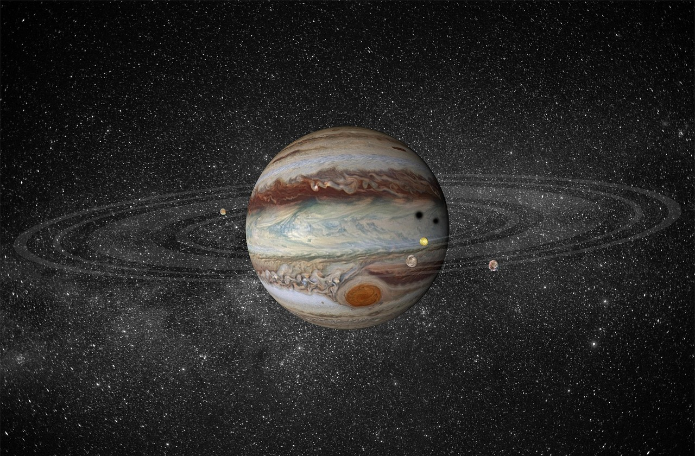

Jupiter is the fifth planet from the Sun and the largest in the solar system, more than twice as massive as all the other planets combined. It is a gas giant made mostly of hydrogen and helium, with no solid surface to stand on. Its banded clouds, powerful storms, and dozens of moons make it a miniature solar system of its own.